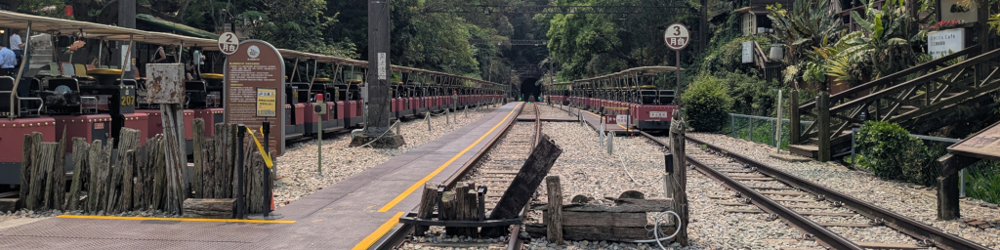
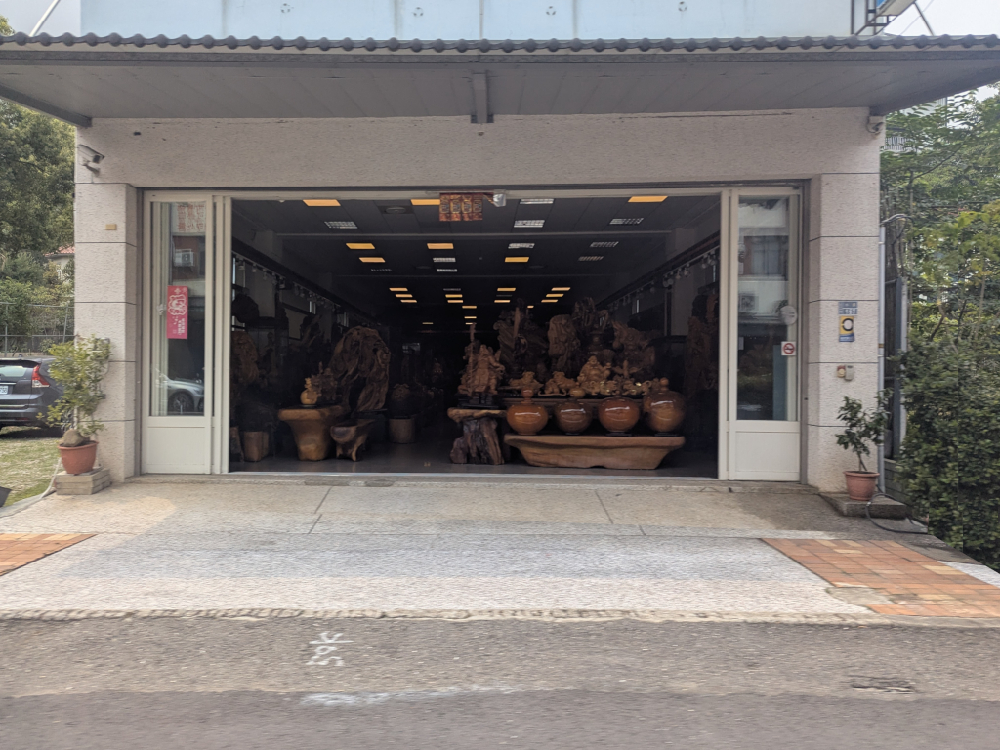
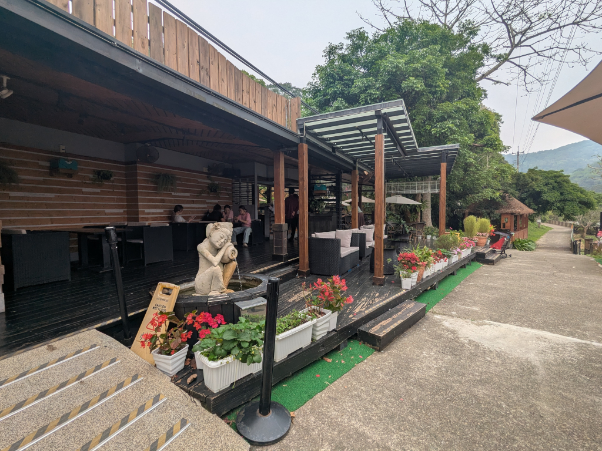
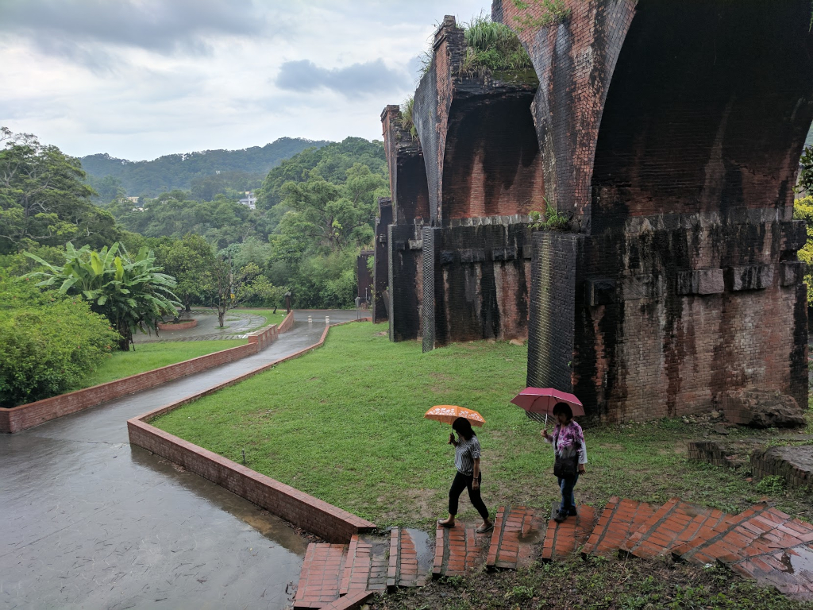
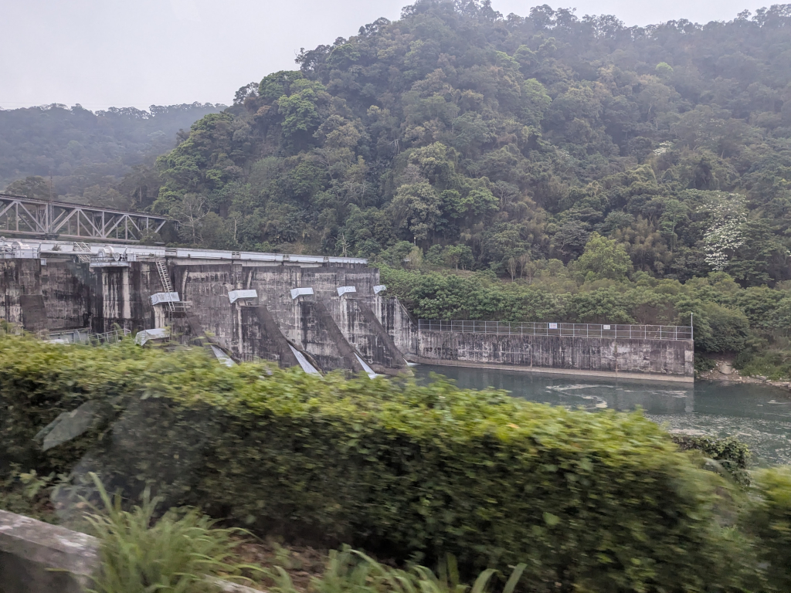
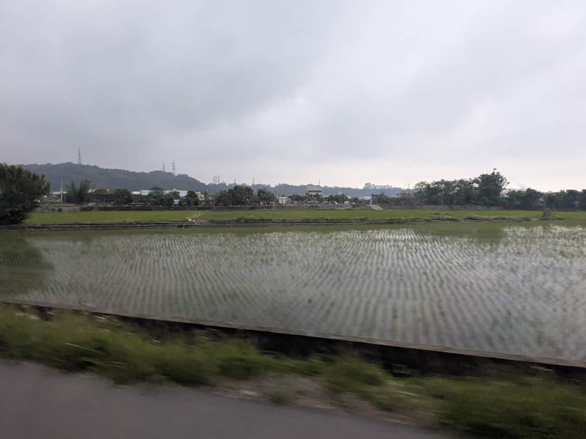
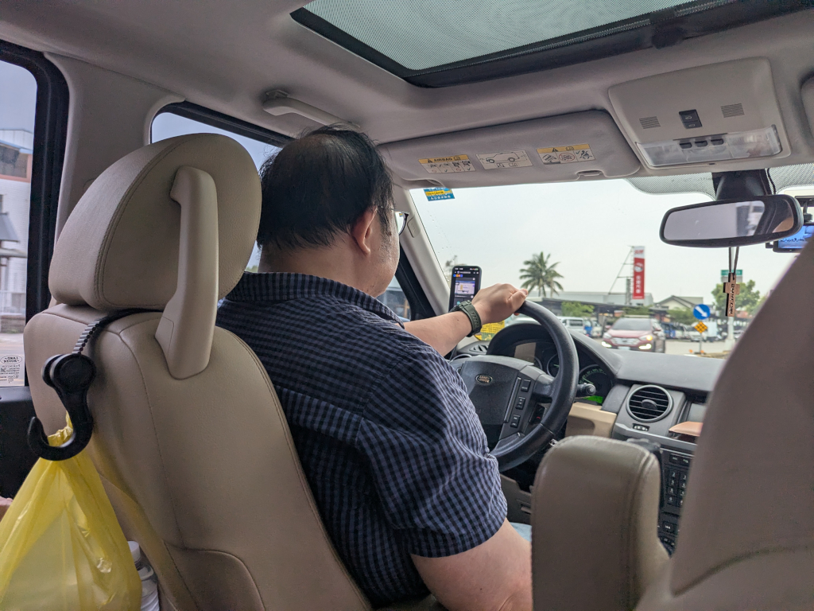
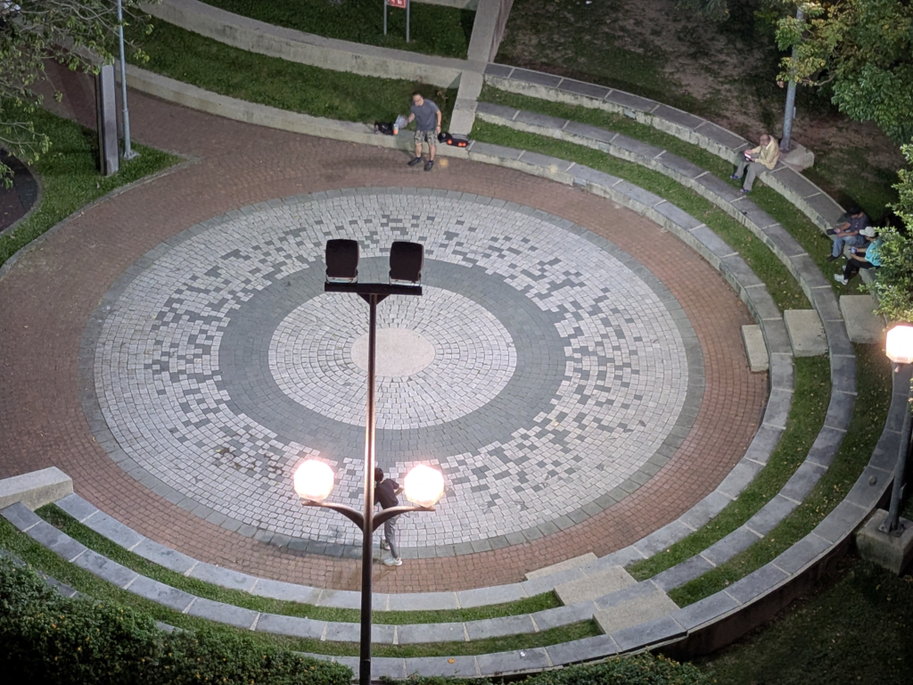

 The old railway line at 勝興站 (Shengxing Station) in Miaoli. | ||
April 15, 2026  Sanyi is well-known for its woodcarving industry. (We have two statues at home that I bought there sometime in the late '60s.) I wanted to go to one or two of the woodcarving shops, not to buy anything, but just to look at the splendid artistry, but no one else wanted to stopnoteWhen we were last here in 2017, the same thing happened,
except it was raining quite hard, so everyone had a good excuse not to stop. , so my only option was to catch
a few pictures out the window of the car as we drove by. Here's a
closer look (although not much better) at some of the woodcarvings in the shop
pictured above, and here's another shop where this somewhat weathered
life-sized statue stood outside just to the left of the shop. Anyhow, we passed the
shops, and on we went, ...
 ...driving through the mountains, ending up at 映象水岸 (Reflections on the Waterfront), a small, remote coffee shop/restaurant on West Lake (西湖), and found a nice private spot to relax. Unfortunately, there was a NT$1,500 cover charge (about $48) to sit there, so we had to order a bunch of stuff. Meihui came for coffee, but we had to order a lot more than just that to cover the NT$1,500 cover charge! And boy, did we order stuff! (Actually, Meihui and Zhiwei ordered itnoteOrdering instructions:
Please scan the QR code with your mobile phone . Order online Table Number VIP1 - 1 2026/4/15 13:24:23 After submitting your order via mobile phone, please pay at the counter. noteOrange Juice 2 @ 200 = 400
(my Cocoa Smoothie which I ordered separately was another NT$250). There was a lot left over; Zhiwei took it home. We
sat and talked (and ate and drank) for a while, enjoying the
relaxing atmosphere on the shore of beautiful
West Lake.
Mixed Fruit Tea (Hot) 250 Rich Cocoa Smoothie 250 Mexican Nachos with Salsa 200 Mixed Platter - Large 480 Original Waffles 200 Service Charge 178 The total included a NT$178 service charge (服務費), something we've never seen before in any eatery in Taiwan that we've visited. I suppose it was for the waiter who had to walk out to our table from the main restaurant to deliver our food to us.  Our next stop was the 龍騰斷橋 (Longteng Broken Bridge). No one wanted to stop and get out and walk around (except me), so we
just drove by it. Fortunately, I was able to get out of the car, take this picture, and get back in. Since our
last visit nine years ago, strong steel arches have been added to support the
deteriorating ruins
Our next stop was the 龍騰斷橋 (Longteng Broken Bridge). No one wanted to stop and get out and walk around (except me), so we
just drove by it. Fortunately, I was able to get out of the car, take this picture, and get back in. Since our
last visit nine years ago, strong steel arches have been added to support the
deteriorating ruinsnoteThe last time we visited the bridge nine years ago with Meihui, Wenshuang, and her then boyfriend, now husband 阿璋,
we parked the car and, with a light rain falling, we were able to walk around the bridge and along several trails, getting some
great up-close views of the ruins. .
From the car, Meihui got a picture of this sign detailing some of the
bridge's history.
And from the internet, here's what the bridge looked like circa 1910.
 It was quite special and a little surreal for me. I was, to say the least, quite disappointed with today's visit.  Heading home, we came upon the 鯉魚潭水庫後池堰 (Liyutan Reservoir Afterbay Weir. It was actually a high dam more than a weir which, by definition, are usually low.) From atop the dam, we could see the nearby 臺鐵舊山線內社川橋 (Taiwan Railway Old Neishechuan Iron Bridge). Often called the Liyutan Iron Bridge, it's a historic, decommissioned steel truss bridge built in 1938. Located on the abandoned Old Mountain Line, it is a popular destination for scenic views and photography, which, I suppose, may be the reason Zhiwei decided to stop therenoteZhiwei is an ametuer photographer and brought his expensive SLR camera
along (I believe it's a Fujifilm) to take pictures. . As we were leaving,
a light rain began to fall.
 From here, it was about a 40-minute ride back to the hotel, passing rice fields on the outskirts of the city, a huge Micron buildingnoteMicron Technology
is a major semiconductor manufacturer in Taiwan and has a big presence in Taichung. , this food
stand, 豐洲肉角飯, featuring a special rice dish, and a 7-Eleven (Family Mart's biggest competitor
in Taiwan), finally arriving at our hotel around 4:30 after a pretty busy day.
 For a good 20 minutes during the drive home, Zhiwei was on a phone call, meeting with several fellow employees from his company to discuss their current project, all the time while driving! We did nothing the rest of the evening. I think we each took a shower, then just relaxed and watched TV. But around 7:30 when I looked outside to see what, if anything, was going on in the park, I saw this (0:24)! We were quite surprised, since no one in our family in Taiwan had ever heard of pickleball making us think it hadn't made its way to Taiwan yet. These were the last pictures for today. We eventually went to bed, looking forward to another great day tomorrow. | ||
{kind=link}
{kind=link}
{kind=link}
{kind=link}
{kind=link}
{kind=link}
{kind=link}
{kind=link}
{kind=link}
{kind=link}
{kind=link}
{kind=link}
{kind=link}
{kind=link}
{kind=link}
{kind=link}
{kind=link}
{kind=link}
{kind=link}
{kind=link}
{kind=link}
{kind=link}
{kind=link}
{kind=link}
{kind=link}